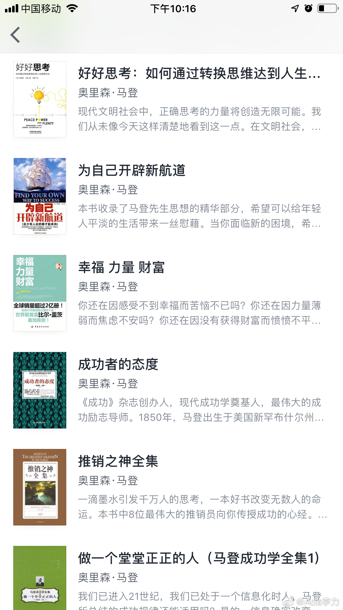

#不知道有什么用的小知识#
不知道又没人读过奥里森.马登的书？
在读书App上发现这个作者署名的四十多本书，参看附图。
猜想是某个书商或出版社搞的写手代号，鸡汤+成功学+励志等，用剪刀和浆糊，初中生估计一周就可以捣鼓出来一本。
就跟经常吃垃圾食品一样，确实能饱腹填饿，长期看则有损身体健康，这类书看多了，确实可以消磨时间，但会损害智商。
不知道又没人读过奥里森.马登的书？
在读书App上发现这个作者署名的四十多本书，参看附图。
猜想是某个书商或出版社搞的写手代号，鸡汤+成功学+励志等，用剪刀和浆糊，初中生估计一周就可以捣鼓出来一本。
就跟经常吃垃圾食品一样，确实能饱腹填饿，长期看则有损身体健康，这类书看多了，确实可以消磨时间，但会损害智商。


- 